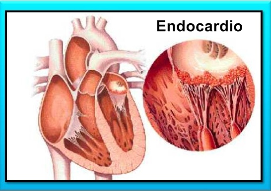
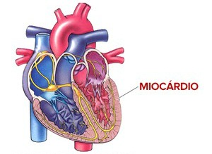
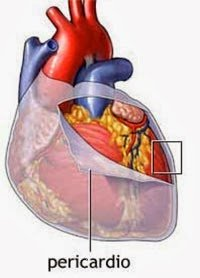
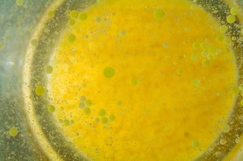
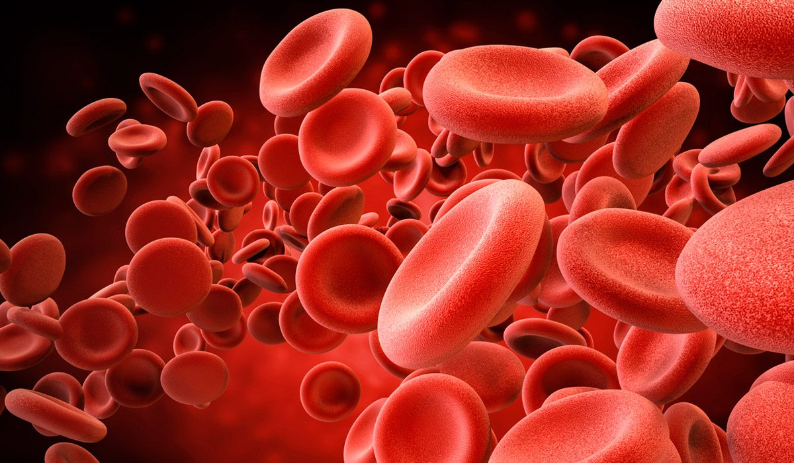
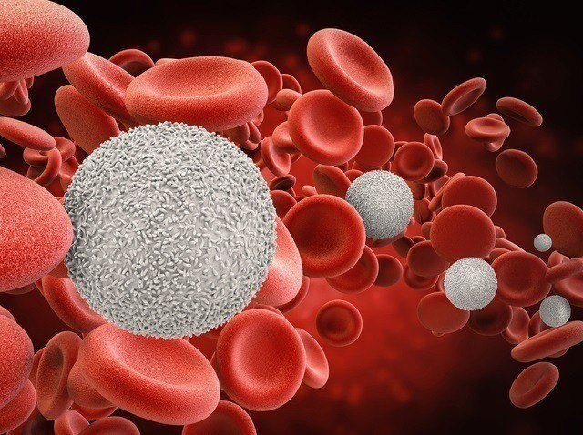
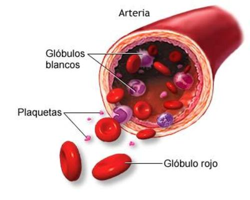

El sistema circulatorio se encarga de bombear, transportar y distribuir la sangre por todo el cuerpo. Se integra con el corazón y los vasos sanguíneos: arterias, venas y capilares. El corazón es una bomba muscular y se considera el centro del sistema circulatorio. Las arterias transportan sangre oxigenada y con nutrientes desde el corazón hasta los tejidos, mientras que las venas llevan sangre poco oxigenada en dirección del corazón (las arterias y venas pulmonares son la única excepción a esta regla). Los capilares son el sitio donde tiene lugar el intercambio de nutrientes y gases entre la sangre y los tejidos. La estructura de los vasos sanguíneos es muy importante para posibilitar sus funciones. La pared de los vasos sanguíneos es tubular, flexible y adaptable a ciertas condiciones fisiológicas, ya sea que produzca vasodilatación o vasoconstricción.
EL CORAZÓN
El corazón funciona como una bomba que hace mover la sangre por todo nuestro cuerpo.
Es un órgano hueco y musculoso del tamaño de un puño. Encerrado en la cavidad torácica, en el centro del pecho, entre los pulmones, sobre el diafragma, dando nombre a la "entrada" del estómago o cardias.
El corazón está dividido en dos mitades que no se comunican entre sí, una derecha y otra izquierda. La mitad derecha siempre contiene sangre pobre en oxígeno, procedente de las venas cava superior e inferior, mientras que la mitad izquierda del corazón siempre posee sangre rica en oxígeno y que, procedente de las venas pulmonares, será distribuida para oxigenar los tejidos del organismo a partir de las ramificaciones de la gran arteria aorta.
Histológicamente en el corazón se distinguen tres capas de diferentes tejidos que, del interior al exterior se denominan endocardio, miocardio y pericardio.
| Parte | Imágen | Descripción |
|---|---|---|
| Endocardio |  | Está formado por un tejido epitelial de revestimiento que se continúa con el endotelio del interior de los vasos sanguíneos. |
| Miocardio |  | Es la capa más voluminosa, estando constituido por tejido muscular de un tipo especial llamado tejido muscular cardíaco. |
| Pericardio |  | Envuelve al corazón completamente. |
VASOS SANGUÍNEOS
Los vasos sanguíneos (arterias, capilares y venas) son conductos musculares elásticos que distribuyen y recogen la sangre de todos los rincones del cuerpo.
Arterias:
Las arterias son aquellas que salen del corazón y llevan la sangre a distintos órganos del cuerpo. Todas las arterias excepto la pulmonar y sus ramificaciones llevan sangre oxigenada. Las arterias contrario a las vena, se localizan profundamente a lo largo de los huesos o debajo de los músculos.
Existen tres tipos principales de arterias, aunque todas conducen sangre, cada tipo de arteria ejecuta funciones específicas e importantes para la cual se adapta su estructura histológica. Por ello se dividen en:
Capilares Sanguíneos:
Los Capilares son vasos sumamente delgados en que se dividen las arterias y que penetran por todos los órganos del cuerpo, al unirse de nuevo forman las venas.
Los capilares son tubos endoteliales muy finos, de paredes delgadas que se anastomosan y cuya función es la de realizar el intercambio metabólico entre la sangre y los tejidos. Estos pueden disponerse en diferentes formas, según los órganos en los que se encuentren, por lo cual aparecen formando redes, haces y glomérulos.
El diámetro de los capilares sanguíneos varía de 6-8 µm y la cantidad de ellos en un órgano está relacionada con la función de dicho órgano. En el miocardio la densidad de capilares por mm2 es de 2 000, mientras en el tejido conjuntivo cutáneo es de 50.
En el hombre, el área total superficial se ha estimado en 100 m2: 60 para los capilares sistémicos y 40 para los pulmonares.
Venas:
Son vasos de paredes delgadas y poco elásticas que recogen la sangre y la devuelven al corazón, desembocan en las Aurículas.
Las propiedades estructurales de la pared de las venas dependen también de las condiciones hemodinámicas. La baja presión en ellas y la velocidad disminuida con que circula la sangre, determinan el débil desarrollo de los elementos musculares en las venas.
De la misma forma, el desarrollo muscular es desigual y depende de que la sangre circule bajo la acción de la gravedad o en contra de ella. Todo esto determina diferencias estructurales. Las venas se clasifican en dependencia del calibre del vaso, en: venilla o vénulas, venas de pequeño, mediano y gran calibre.
LA SANGRE
La sangre es un tejido líquido de color rojo, viscoso de sabor salado y olor especial; compuesto por agua y sustancias orgánicas e inorgánicas (sales minerales) disueltas, que forman el plasma sanguíneo y tres tipos de elementos formes o células sanguíneas: glóbulos rojos, glóbulos blancos y plaquetas.
Una gota de sangre contiene aproximadamente unos 5 millones de glóbulos rojos, de 5.000 a 10.000 glóbulos blancos y alrededor de 250.000 plaquetas.
La sangre como medio de transporte:
Componentes de la sangre:
| Componente | Imágen | Descripción |
|---|---|---|
| Plasma sanguíneo |  | Es la parte liquida, es salado de color amarillento y en él flotan los demás componentes de la sangre, también lleva los alimentos y las sustancias de desecho recogidas de las células. El plasma cuando se coagula la sangre, origina el suero sanguíneo. |
| Hematíes |  | Tienen forma de discos bicóncavo y son tan pequeños que en cada milímetro cúbico hay cuatro a cinco millones, miden unas siete micras de diámetro, no tienen núcleo por eso se consideran células muertas, tiene un pigmento rojizo llamado hemoglobina que les sirve para transportar el oxigeno molecular (O2) desde los pulmones a las células. |
| Leucocitos |  | Son células vivas que se trasladan, se salen de los capilares y se dedican a destruir los microbios y las células muertas que encuentran por el organismo. También producen antitoxinas o anticuerpos que neutralizan los venenos de los microorganismos que producen las enfermedades infecciosas. |
| Plaquetas |  | Son células muy pequeñas, sirven para taponar las heridas y evitar hemorragias. En realidad son fragmentos de unas células especializadas denominadas megacariocito. Participan en la coagulación de la sangre. |
Bibliografía
1.-https://accessmedicina.mhmedical.com/content.aspx?bookid=1506§ionid=98183303 2.-https://www.monografias.com/trabajos95/el-sistema-circulatorio/el-sistema-circulatorio.shtml